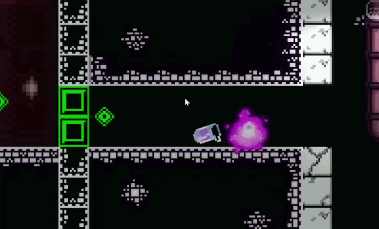

Gloop! is a 2D Puzzle Platformer built in Unity. The game stars a slime who has escaped from a facility who is determined to be reunited with his slime friend. The game is focused on puzzle solving using unique actions like wall climbing, throwing pieces of the slime, and turning into a gas that can move differently.
I implemented a dyanmic camera that follow a set track and can adjust zoom based on room needs.

I implemented the Slime's ability to throw a baby slime, including adding a line to see its trajectory. I also
made it so the slime can move on its own and can merge with the other little slimes as well as the player.
I implemented a fan object that can push the player and its little slime allowing interesint decisions.
I implemented the ability for the gas slime to throw little versions of itself. This pushes the main slime.
I also made it so throwing the gas slime through fire causes an explosion that destorys certain game objects and enemies.4
I implemented a cold fan with particle effects that can cause the gas player to turn back into a slime.